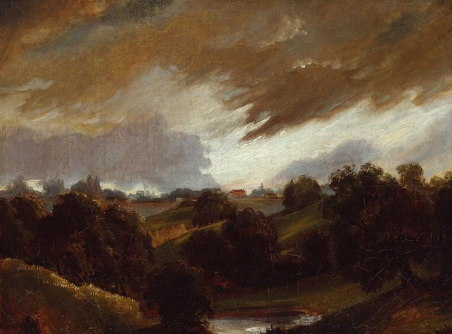

The Moor’s Shadow: Encoding Racial Language in Wuthering Heights with TEI
A TEI-based analysis of Emily Brontë’s novel, Wuthering Heights that identifies and interprets the racialized language surrounding Heathcliff through customized markup and close reading. This project intervenes in existing digital humanities methodologies by proposing a race-centered TEI customization model of encoding literary texts.
Research Question: How can TEI encoding be customized to identify and interpret racialized language in Wuthering Heights, specifically in relation to Heathcliff’s ambiguous identity?
Hampstead, Stormy Sky, John Constable (1814)